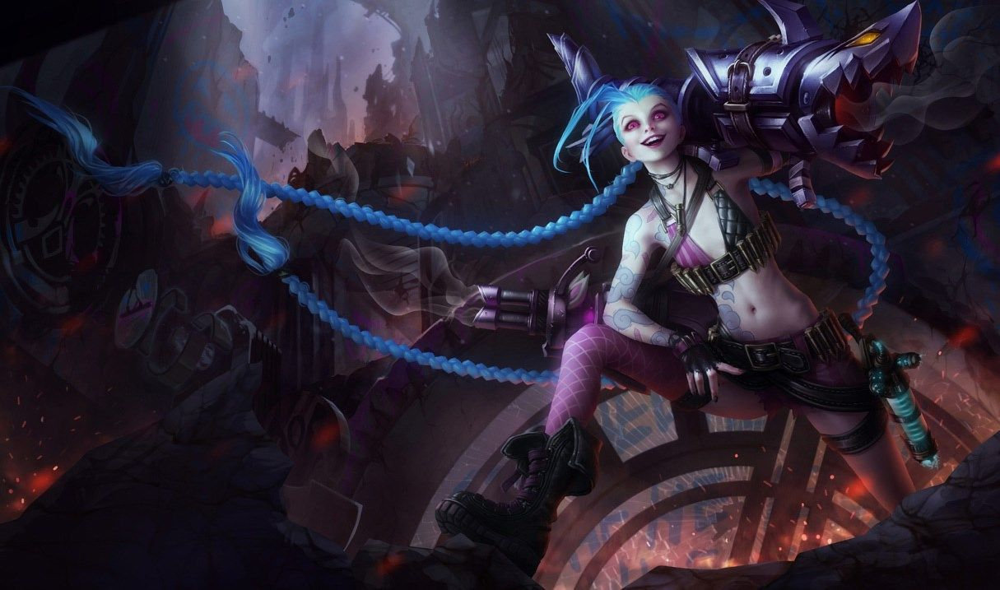

징크스
징크스
징크스, 난폭한 말괄량이
Jinx, the Loose Cannon

1. 배경
2. 스킬
2.1. 패시브 - 신난다!(Get Excited!)
신이 난 징크스는 최고 공격 속도 제한을 초과할 수 있습니다.
2.2. Q - 휘릭휘릭!(Switcheroo!)
생선 대가리 로켓 런처(FISHBONES): 로켓 런처로 기본 공격 시 마나를 소모하여 대상과 주변 적들에게 110%의 물리 피해를 입힙니다. 추가 공격 속도는 10% 느려지지만 사거리는 증가합니다.
빵야빵야 미니건(POW-POW): 미니건으로 기본 공격 시 2.5초 동안 공격 속도가 상승합니다. 이 효과는 최대 3번까지 중첩됩니다.
2.3. W - 빠직!(Zap!)
징크스의 공격 속도가 증가할수록 빠직!의 시전 시간이 감소합니다.
2.4. E - 와작와작 뻥!(Flame Chompers!)
와작와작 지뢰는 돌진하는 적을 막습니다.
2.4. R - 초강력 초토화 로켓!(Super Mega Death Rocket!)
에픽 몬스터는 최대 1000의 피해를 받습니다.
3. 장점
무기 변환을 통한 유연한 공격
폭발적인 기동력에서 시작되는 막대한 조건부 캐리력
위치 확정형 옵션의 변수 차단 및 능동적인 CC기 연계를 통한 호응 능력
우수한 라인 클리어와 공성 능력
단순한 스킬셋
여러 장점들로 인한 강력한 압박 능력
4. 단점
원거리 딜러 최하위권 생존력
불안정하고 상성을 많이 타는 라인전
높은 아이템 의존도
한타에서 패시브 의존도가 높음으로 인해 상체의 영향을 많이 받음
여러 단점들로 인해 압박당할 때 무력함

저작물은 CC BY-NC-SA 2.0 KR에 따라 이용할 수 있습니다. (단, 라이선스가 명시된 일부 문서 및 삽화 제외)